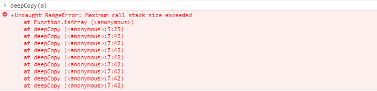
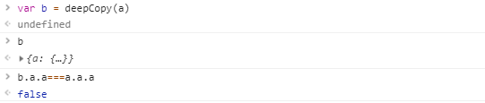
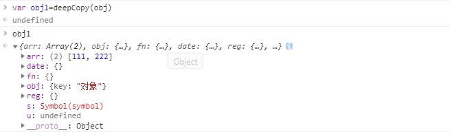
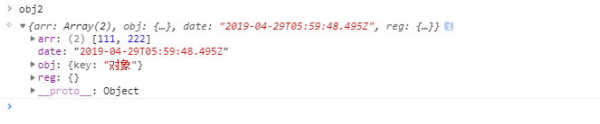
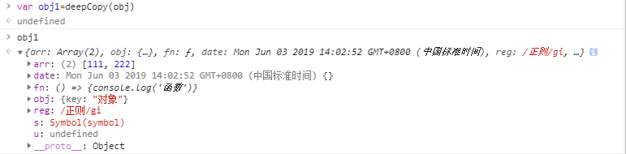
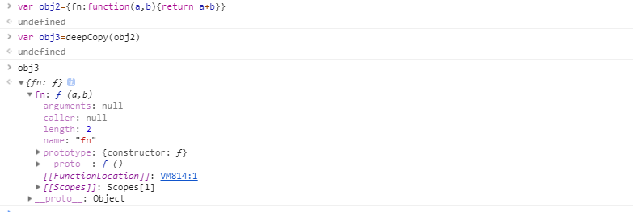

js的深拷贝浅拷贝是很常遇到的问题，一直模模糊糊有点说不过去，所以这次好好总结一下。
1、js的引用
JS分为基础类型和引用类型两种数据类型：
基础类型：number、string、boolean、null、undefined、symbol
引用类型：Object(Array，Date，RegExp，Function)
它们有个区别 —— 保存位置不同。基本数据类型保存在栈内存中；引用数据类型保存在堆内存中，然后在栈内存中保存了一个对堆内存中实际对象的引用，即数据在堆内存中的地址。所以应该记住：基础数据类型赋值时是【传值】，而引用数据类型赋值时是【传址】。
为什么基本数据类型保存在栈中，而引用数据类型保存在堆中？
1）堆比栈大，栈比堆速度快；
2）基本数据类型比较稳定，而且相对来说占用的内存小；
3）引用数据类型大小是动态的，而且是无限的，引用值的大小会改变，不能把它放在栈中，否则会降低变量查找的速度，因此放在变量栈空间的值是该对象存储在堆中的地址，地址的大小是固定的，所以把它存储在栈中对变量性能无任何负面影响；
4）堆内存是无序存储，可以根据引用直接获取；
因此引用数据类型赋值、传参时新旧值会相互影响，如下：
1）引用类型赋值
var obj ={a:1,b:2,c:3};
var obj1= obj;
obj1.a=5;
console.log(obj); //{a: 5, b: 2, c: 3}
console.log(obj1); //{a: 5, b: 2, c: 3}2）引用类型作为函数参数传递
var obj ={a:1,b:2,c:3};
fn=(obj)=>{
var obj2= obj;
obj2.a=5;
};
fn(obj);
console.log(obj);//{a: 5, b: 2, c: 3}ps:如果引用赋值后将对象置空，则相互不受影响（因为对象公用一个内存，当内存销毁的时候，指向这个内存空间的所有指针需要重新定义，不然会造成野指针错误。）
var obj = {a:1,b:2,c:3};
var obj3 = obj;
obj = {};
obj.a = 5;
console.log(obj3);//{a: 1, b: 2, c: 3}
console.log(obj); //{a: 5}2、浅拷贝与深拷贝
浅拷贝：拷贝原始对象的第一层属性，当属性是基本类型时，拷贝属性的值，当属性是引用类型，拷贝属性的内存地址，因此新旧对象修改属性相互影响。
深拷贝：拷贝原始对象的所有的属性，并拷贝属性指向的动态分配的内存，深拷贝新旧对象不共享内存，修改新对象不会改到原对象。
3、浅拷贝
1）解构赋值
var obj = {a:{i:1,j:2,k:3},b:2,c:3};
var {...obj1} = obj;
obj1.b=5;obj1.a.i=5;
console.log(obj);//{a:{i:1,j:2,k:3},b:2,c:3};
console.log(obj1);//{a:{i:5,j:2,k:3},b:5,c:3};var arr=[1,[1,2,3],2,3];
var [...arr1]=arr;
arr1[0]=5;
arr1[1][0]=5;
console.log(arr); //[1,[5,2,3],2,3];
console.log(arr1); //[5,[5,2,3],2,3]; 2）Object.assign() 方法用于将所有可枚举属性的值从一个或多个源对象复制到目标对象。它将返回目标对象。
var obj = {a:{i:1,j:2,k:3},b:2,c:3};
var obj2 = Object.assign({},obj);
obj2.b=5;
obj2.a.i=5;
console.log(obj); //{a:{i:5,j:2,k:3},b:2,c:3};
console.log(obj2); //{a:{i:5,j:2,k:3},b:5,c:3};3）Array.prototype.slice() 方法提取并返回一个新的数组，如果源数组中的元素是个对象的引用，slice会拷贝这个对象的引用到新的数组。
let arr=[0,1,[2,3],4],
arr1=arr.slice();
arr[0]=1;
arr[2][0]=1;
console.log(arr); //[1,1,[1,3],4]
console.log(arr1); //[0,1,[1,3],4]4）Array.prototype.concat() 用于合并多个数组，并返回一个新的数组。
var arr1 = [{a: 'old'}, 'b', 'c']
var arr2 = [{b: 'old'}, 'd', 'e']
var arr3 = arr1.concat(arr2)
arr3[0].a = 'new'
arr3[3].b = 'new'
console.log(arr3)//[{a: 'new'}, 'b', 'c',{b: 'new'}, 'd', 'e']
console.log(arr1[0].a) // new
console.log(arr2[0].b) // new4、实现深拷贝
1）循环递归
function isObj(obj) {
return (typeof obj === 'object' || typeof obj === 'function') && obj !== null;
}
function deepCopy(obj) {
let tempObj = Array.isArray(obj) ? [] : {};
for(let key in obj) {
tempObj[key] = isObj(obj[key]) ? deepCopy(obj[key]) : obj[key];
}
return tempObj;
}2）JSON方法
3）另外还有jquery的$.extend() 和lodash的cloneDeep()
6、深拷贝的一些坑
1）环
环就是对象循环引用，导致自己成为一个闭环，例如下面这个对象:
var a = {}
a.a = a用之前的deepCopy试一下，会报栈溢出...

解决：使用一个WeakMap结构存储已经被拷贝的对象，每一次进行拷贝的时候就先向WeakMap查询该对象是否已经被拷贝，如果已经被拷贝则取出该对象并返回。
将deepCopy函数改造成如下：
function deepCopy(obj, hash = new WeakMap()) {
if(hash.has(obj)) return hash.get(obj)
let cloneObj = Array.isArray(obj) ? [] : {}
hash.set(obj, cloneObj)
for (let key in obj) {
cloneObj[key] = isObj(obj[key]) ? deepCopy(obj[key], hash) : obj[key];
}
return cloneObj
}运行：

2）特殊对象
我们定义一个对象
var obj = {
arr: [111, 222],
obj: {key: '对象'},
fn: () => {console.log('函数')},
date: new Date(),reg: /正则/ig,
u:undefined,
s:Symbol('symbol'),
};用 之前写的deepCopy()方法拷贝一个新的对象：结果发现 date对象、函数和正则都成了空对象。

再用JSON方法试一次：结果发现date对象成了字符串，正则成了一个空对象， `undefined`、`symbol` 和函数直接就不见了。

解决：参考MDN上的结构化拷贝
function deepCopy(obj, hash = new WeakMap()) {
let cloneObj
let Constructor = obj.constructor
switch(Constructor){
case RegExp:
cloneObj = new Constructor(obj)
break
case Date:
cloneObj = new Constructor(obj.getTime())
break
case Function:
cloneObj = eval(obj)
break
default:
if(hash.has(obj)) return hash.get(obj)
cloneObj = new Constructor()
hash.set(obj, cloneObj)
}
for (let key in obj) {
cloneObj[key] = isObj(obj[key]) ? deepCopy(obj[key], hash) : obj[key];
}
return cloneObj
} 运行：

另外可见function类型使用eval(fn)好像是成功的复制了，但是当不是以箭头函数的方式写的时候就不行了...
暂时还没找到一个好方法复制function，悉听有办法的同志指教╰(￣▽￣)╭